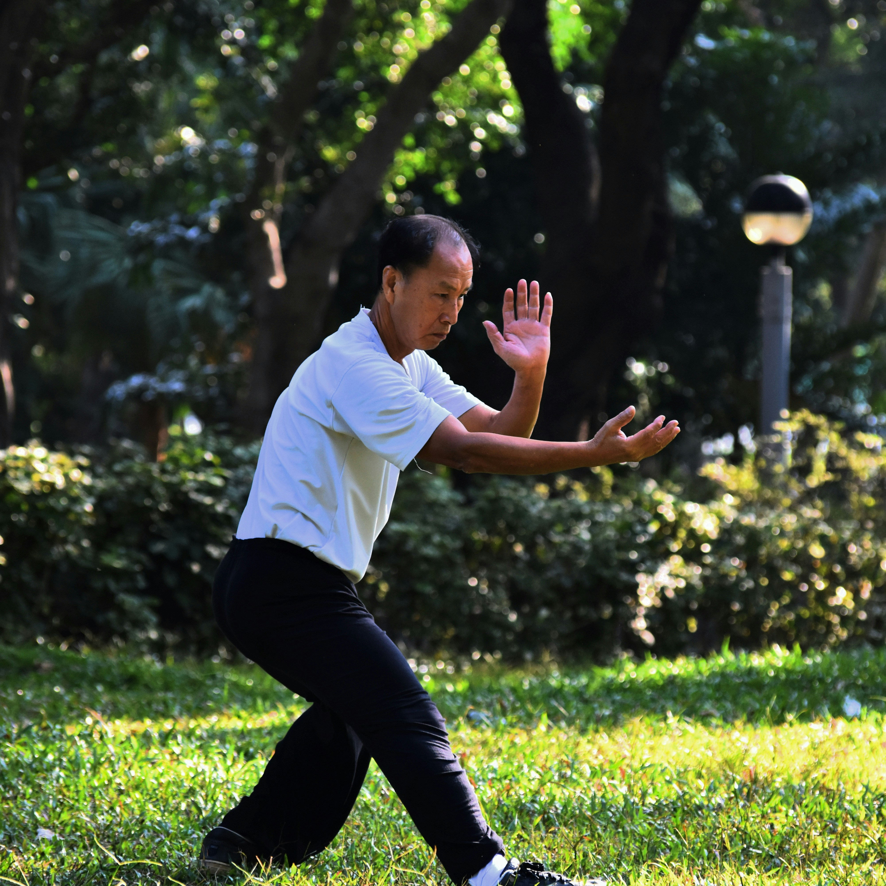

I started learning tai chi a few weeks ago and I really like it. I do not go to a class. Instead I watch videos on YouTube and I follow along in my living room. It is a slow kind of exercise where you move your arms and legs in a soft and steady way. It helps me feel calm and it is good for my balance. I am still a beginner but I am getting better each week.

Following a video is easy once you get used to it. I just try to copy what the teacher does. If I miss a move I pause the video and try again. Here are the steps I follow:


I hope to keep doing tai chi for a long time. Maybe one day I will join a real class but for now my laptop and YouTube are all I need.